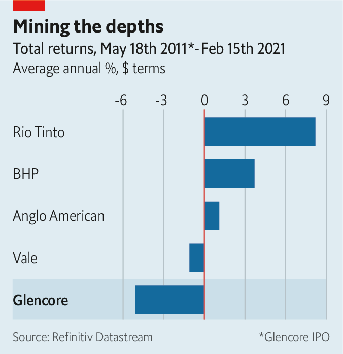
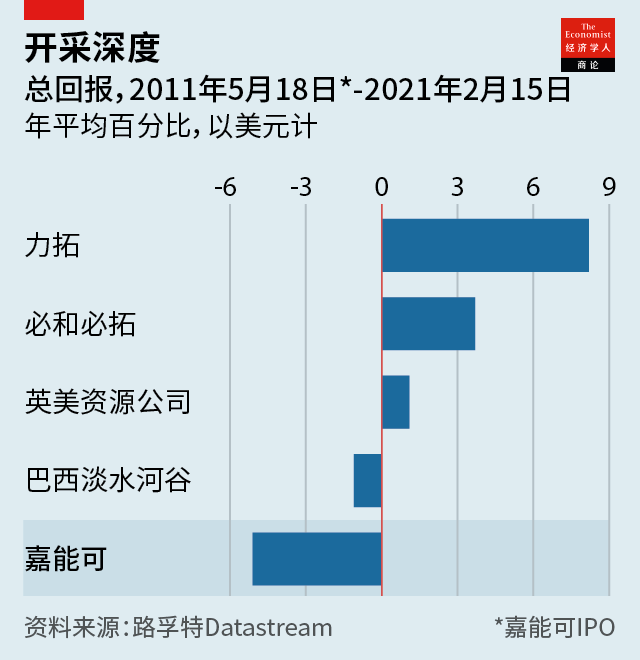

Text
2021-02-28T06:22:14+00:00
Glencore
嘉能可
嘉能可
Pit stop
开进加油站
開進加油站
A new boss takes the reins at a good time for commodities
新老板在大宗商品的好时机接棒
新老闆在大宗商品的好時機接棒
MINING BOSSES often leave under a cloud, ousted after a profit slump, a public-relations disaster or pit-hole calamity. Not so Ivan Glasenberg. For his last set of results on February 16th the boss of Glencore offered shareholders—including himself—a reinstated dividend and an upbeat outlook. Leaving on a high note after 19 years in the top job will not make life easier for his anointed successor, Gary Nagle.
矿业老板常常在利润大跌、公关危机或矿井灾难后被扫地出门，黯然离场。伊凡·格拉森伯格（Ivan Glasenberg）不是。2月16日，这位嘉能可公司（Glencore）的老板公布了自己任内最后一组业绩，向股东——包括他自己——恢复分红，并对前景做出了乐观的展望。他在这个最高职位工作19年后高调离任，但这并不会让他指定的接班人加里·纳格尔（Gary Nagle）日子更好过些。
礦業老闆常常在利潤大跌、公關危機或礦井災難後被掃地出門，黯然離場。伊凡·格拉森伯格（Ivan Glasenberg）不是。2月16日，這位嘉能可公司（Glencore）的老闆公布了自己任內最後一組業績，向股東——包括他自己——恢復分紅，並對前景做出了樂觀的展望。他在這個最高職位工作19年後高調離任，但這並不會讓他指定的接班人加里·納格爾（Gary Nagle）日子更好過些。
All miners have had a bull run of late as commodity prices have surged. China’s appetite for natural resources is unabated. America and Europe are planning infrastructure pushes that will juice demand. The green tinge of such stimulus spending is especially good news for Glencore, a big producer of the cobalt, copper and nickel needed for electric cars and the like.
随着大宗商品价格飙升，所有的矿商最近都经历了一波牛市。中国对自然资源的胃口有增无减。美国和欧洲正在计划推动基础设施建设，这将为需求注入活力。这一轮刺激支出更注重绿色环保，这对嘉能可而言尤其是个好消息，它是生产电动汽车等同类产品所需的钴、铜和镍的重要生产商。
隨着大宗商品價格飆升，所有的礦商最近都經歷了一波牛市。中國對自然資源的胃口有增無減。美國和歐洲正在計劃推動基礎設施建設，這將為需求注入活力。這一輪刺激支出更注重綠色環保，這對嘉能可而言尤其是個好消息，它是生產電動汽車等同類產品所需的鈷、銅和鎳的重要生產商。
Investors on the earnings call were as focused on life after Mr Glasenberg. It may not be so different. Those used to seeing the Swiss firm run by a fast-talking South African accountant who has spent much of his career on the coal side of the business might not notice the handover, due to happen in the next few months. Like his predecessor, Mr Nagle is all those things. He will become only the fourth boss to lead the company since its founding in 1974.
财报会议上，投资者对格拉森伯格离任后的状况同样关注。可能不会有太大不同。那些习惯看到这位伶牙俐齿、大部分职业生涯都花在煤矿业务上的南非会计掌管这家瑞士公司的人，可能觉察不到这场未来数月即将发生的交接。纳格尔具备他前任的所有这些特质。这家1974年成立的公司到他这里仅迎来第四位掌门人。
財報會議上，投資者對格拉森伯格離任後的狀況同樣關注。可能不會有太大不同。那些習慣看到這位伶牙俐齒、大部分職業生涯都花在煤礦業務上的南非會計掌管這家瑞士公司的人，可能覺察不到這場未來數月即將發生的交接。納格爾具備他前任的所有這些特質。這家1974年成立的公司到他這裡僅迎來第四位掌門人。
Investors expect continuity in the business. Mr Glasenberg has re-engineered a pure commodities trader into a firm that also digs the stuff up. The model has not delivered stellar returns, at least since the firm went public in 2011 (see chart). But trading profits last year were fat and Mr Nagle says the set-up is fit for purpose.
投资者期望业务保持连续性。格拉森伯格把一家纯粹的大宗商品交易商重构为一家也开采资源的公司。至少自2011年公司上市以来，该模式尚未带来亮眼的回报（见图表）。但去年的交易利润颇丰，纳格尔说公司架构契合目标。
投資者期望業務保持連續性。格拉森伯格把一家純粹的大宗商品交易商重構為一家也開採資源的公司。至少自2011年公司上市以來，該模式尚未帶來亮眼的回報（見圖表）。但去年的交易利潤頗豐，納格爾說公司架構契合目標。
Three thorny dossiers will keep him busy. The first is coal, of which Glencore is the biggest shipper. The banks that fund its trading arm are under pressure to cut ties to polluters. Glencore has some green credentials and says it is running down coal assets gradually. But a more radical move, like a spin-off, may be needed.
三份棘手的卷宗会让这位新老板很忙。第一份是煤炭，嘉能可是全球最大的煤炭生产商。为其贸易部门提供资金的银行正面临压力，被要求切断与污染大户的联系。嘉能可拥有一定的环保资质，并表示正在逐步减少煤炭资产。但它可能还是需要采取更激进的行动，比如分拆。
三份棘手的卷宗會讓這位新老闆很忙。第一份是煤炭，嘉能可是全球最大的煤炭生產商。為其貿易部門提供資金的銀行正面臨壓力，被要求切斷與污染大戶的聯繫。嘉能可擁有一定的環保資質，並表示正在逐步減少煤炭資產。但它可能還是需要採取更激進的行動，比如分拆。
Then there is the Democratic Republic of Congo. A big source of copper and cobalt profits, it is also in the sights of America’s Department of Justice. Glencore denies any wrongdoing. After the Congolese elected a new president in 2018 some faces that helped Glencore thrive are being replaced. Dan Gertler, who teamed up with Glencore to develop assets in the DRC, recently earned a partial reprieve from American sanctions (he also denies wrongdoing). The copper belt is rife with rumours that Mr Gertler may be looking to cash out.
然后是刚果民主共和国。作为铜钴利润的重要源头，该国也是美国司法部的关注对象。嘉能可否认有任何不法行为。刚果人在2018年选出新总统后，一些曾帮助嘉能可崛起的面孔正在被取代。与嘉能可在刚果（金）合作开发资产的丹·格特勒（Dan Gertler）最近获得了美国制裁的部分暂缓执行（他也否认有不当行为）。在铜矿带，有关格特勒可能会伺机套现的传言不绝于耳。
然後是剛果民主共和國。作為銅鈷利潤的重要源頭，該國也是美國司法部的關注對象。嘉能可否認有任何不法行為。剛果人在2018年選出新總統後，一些曾幫助嘉能可崛起的面孔正在被取代。與嘉能可在剛果（金）合作開發資產的丹·格特勒（Dan Gertler）最近獲得了美國制裁的部分暫緩執行（他也否認有不當行為）。在銅礦帶，有關格特勒可能會伺機套現的傳言不絕於耳。
Perhaps the trickiest dossier is Mr Glasenberg. He will not upgrade himself to chairman, as some CEOs are wont to do. But he intends to keep his 9% stake, making him the second-biggest shareholder. And, potentially, its biggest back-seat driver.■
最难处理的卷宗可能是写着“格拉森伯格”的那一份。他不会效仿一些CEO的惯常做法，把自己晋升为董事长。但他打算保留自己9%的股份，这让他成为公司第二大股东，也可能会成为最大的幕后操控者。
最難處理的卷宗可能是寫着“格拉森伯格”的那一份。他不會效仿一些CEO的慣常做法，把自己晉陞為董事長。但他打算保留自己9%的股份，這讓他成為公司第二大股東，也可能會成為最大的幕後操控者。